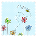
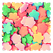
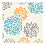
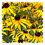
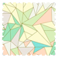
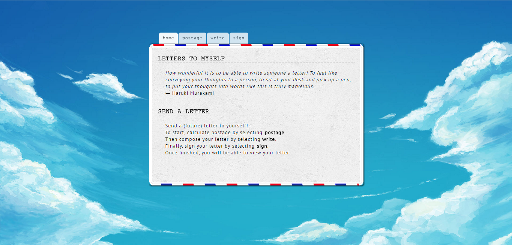
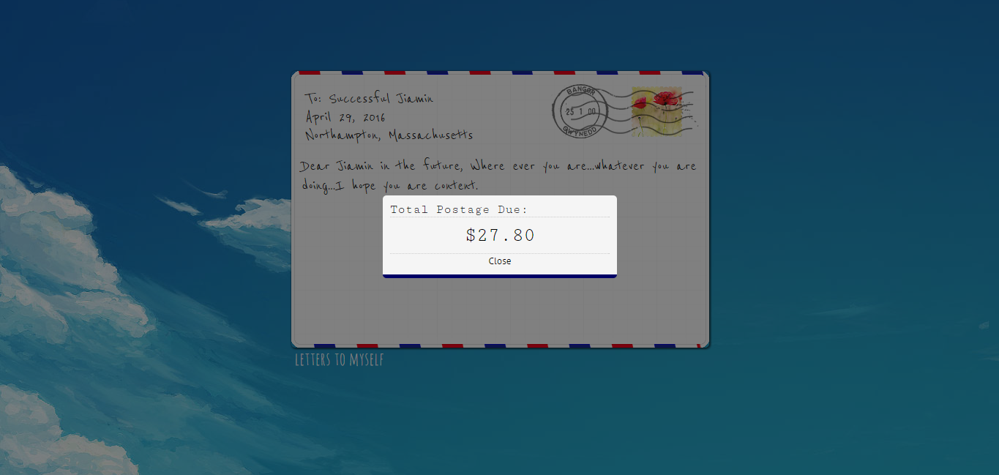

LETTERS TO MYSELF
How wonderful it is to be able to write someone a letter! To feel like conveying your thoughts to a person, to sit at your desk and pick up a pen, to put your thoughts into words like this is truly marvelous.
- Haruki Murakami
SEND A LETTER
Send a (future) letter to yourself!
To start, calculate postage by selecting postage.
Then compose your letter by selecting write.
Finally, sign your letter by selecting sign.
Once finished, you will be able to view your letter.
Postage Calculator*
*final prices will vary depending on message length.
Write Letter
>>> Sign & Stamp
 |
 | |
| 01 | 02 | 03 |
|  |  |  |
| 04 | 05 | 06 |
|  | ||
| 07 | 08 | 09 |
Design Document
Screenshots


Mission Statement: To create a website of the imagination that allows users to write a letter to themselves in the future.
Requirements:
Forms | Cookies | Interaction | JavaScript:
Forms and cookies are heavily incorported via the postage calculator, letter writing system, and the signature/stamping tool. Specifically, the use of my own computeCost.js script allows users to input information about the destination and times of their letter to be sent as well as the method of delivery (standard or expedited). The computeCost script activates via onClick on the Estimate button, collects the information the user inputs, calculates the postage, and returns the estimated cost of postage in the readonly box next to the Estimate button. For example, if a user selects International mailing, their postage will be significantly higher than Domestic mailing. Sending mail during the peak holiday months is also more expensive than during the summer months. These factors are all taken into consideration when calculating cost of postage in the computeCost script.
In addition, all three forms on each tab (postage, write, and sign/stamp) utilize the cookie-script.js script to save information about the letter into cookies for later viewing when the user has finished writing his or her letter and wants to see the final product. For example, in the postage calculator, if a user enters "Northampton, Massachusetts" and clicks the Estimate button, this will appear as the destination on the final letter. In composing the content of the letter, if a user needs to make changes to the letter after already clicking "Save", he or she must click "Save" again to overwrite the old cookie. A jQuery popup will appear informing the user that the message has been saved.
All the information the user enters is saved into cookies and later retrieved to be presented as a fancy letter after signing and stamping (the form on the sign and stamp page will redirect the user to the next page letter.html). In addition, the postage calculator provides an estimate of the cost of postage, but depending on the length of the message written, this estimated cost will change (via scripting), and the page showing the final letter will show the final cost in a small jQuery pop-up.
User Feedback:
User feedback is mostly achieved through the subtle act of a link or a button changing color/cursor upon hovering over it. In addition, on the sign and stamp tab, if a user fails to type his/her name, a red notice will appear requiring his/her typed name.
Canvas Graphics:
Canvas graphics is implemented through Signature Pad, a jQuery plugin that allows users to draw their signature. Users have the option of typing their signature or drawing their signature. Substantial modifications were made to the signature pad's stylesheet such as the appearance of square buttons, font styles, and other subtle changes in aesthetic.
Theme & Appearance | Navigation Aids | Layout:
"Postcard flying throught the air" theme assists in achieving a cartoon like, whimsical feel. Clean and functional design through one centered (and scrollable) container with easy to access navigation tabs. A separate stylesheet for the final letter was designed, and slight modifications were made to the postal container (e.g., grid design and black and white stamps) to better indicate to the user their finished product.
Stylesheets:
There is one stylesheet for the index page (writing process) and one stylesheet for the letter page (final product). There is also another stylesheet for the signature pad plug-in.
Color choices: Classic blue, red, and white postal colors
Typography: Mainly "Typewriter" fonts, but the final letter uses a handwritten font
Additional Features
Simple Fade In Script | jQuery Tab Layout (modified CSS) | Display Stamp Image Script (removed randomizer, added conditionals: if user selects stamp 1, this value will be saved into a cookie, retrieved in the final product, and processed to display its corresponding image)
Images:
Stamps and postcard images were all designed in Photoshop. Otherwise, the lack of images on the site was motivated by my decision to provide a clean canvas for users to craft their message. Often times, the act of letter writing is done in an uncluttered, unobtrusive space that allows for meaningful reflection.